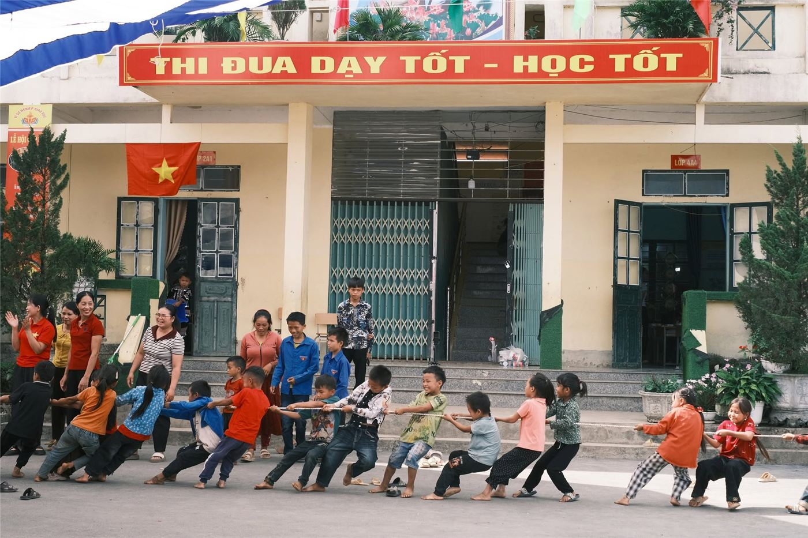
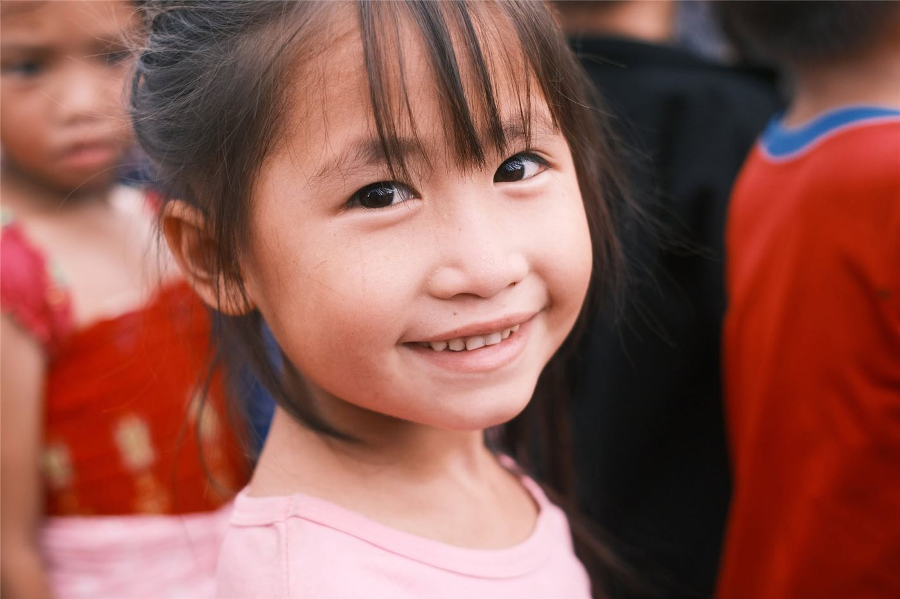

Chân dung 02
Từ trang sách, em hình dung về thế giới rộng lớn
Với Giàng Thị Báu, học sinh lớp 6A1, Trường THCS Mường Thín, huyện Tuần Giáo, Điện Biên, giờ ra chơi không chỉ là khoảng thời gian nghỉ ngơi cùng bạn bè. Đó còn là lúc em tìm đến thư viện xanh, chọn một cuốn sách và khám phá những điều nằm ngoài cuộc sống quen thuộc quanh mình.
Một khoảng giờ ra chơi bên trang sách
Sau tiếng trống báo giờ ra chơi, học sinh Trường THCS Mường Thín có thể tìm đến thư viện xanh trong khuôn viên trường. Giữa khoảng thời gian ngắn ngủi trước tiết học tiếp theo, những cuốn sách, tờ báo trở thành lựa chọn của nhiều em.
Giàng Thị Báu, học sinh lớp 6A1, là một trong số đó. Theo Báo Điện Biên Phủ, em thường tranh thủ giờ ra chơi để đọc sách tại thư viện xanh. Những cuốn báo, tạp chí dành cho thiếu nhi dân tộc, truyện cổ tích Việt Nam và thế giới, sách kỹ năng sống là các thể loại em yêu thích.
Báu chia sẻ rằng sách mang đến cho em nhiều kiến thức thú vị, giúp em hiểu thêm về thế giới bên ngoài.
Lời kể ngắn gọn ấy mở ra một góc nhìn về việc đọc của học sinh vùng cao. Đôi khi, hành trình khám phá thế giới không bắt đầu từ một chuyến đi xa, mà từ việc mở một cuốn sách, theo dõi câu chuyện của một nhân vật hay tìm hiểu về một vùng đất chưa từng đặt chân tới.
Từ những câu chuyện quen thuộc đến thế giới rộng lớn
Truyện cổ tích đưa người đọc đến với những vùng đất và nhân vật tưởng tượng. Báo chí, tạp chí thiếu nhi mở ra những câu chuyện đang diễn ra trong cuộc sống. Còn sách kỹ năng sống đem đến những tình huống, cách ứng xử và bài học có thể vận dụng trong đời thường.
Với mỗi thể loại, trẻ có một cách tiếp cận khác nhau. Có cuốn khiến các em tò mò về những điều chưa biết; có câu chuyện giúp các em hiểu hơn về con người, tình bạn và cách sống. Những trang sách vì thế không chỉ cung cấp kiến thức, mà còn tạo cơ hội để trẻ hình dung về những điều nằm ngoài trải nghiệm hằng ngày.
Sở thích đọc sách của Báu cho thấy thư viện trường học có thể trở thành một không gian để học sinh chủ động tìm kiếm điều mình quan tâm. Khi sách được đặt ở nơi dễ tiếp cận, các em có thêm cơ hội lựa chọn, đọc và hình thành thói quen khám phá tri thức theo cách riêng.
Để mỗi trang sách mở thêm một cánh cửa
Theo bài viết của Báo Điện Biên Phủ, thư viện Trường THCS Mường Thín đáp ứng các yêu cầu của thư viện tiên tiến, đồng thời duy trì hoạt động cho mượn và sử dụng sách, báo, tài liệu tham khảo phục vụ giáo viên và học sinh.
Không gian thư viện xanh trong khuôn viên trường cũng tạo điều kiện để học sinh tiếp cận sách ngay trong giờ nghỉ. Với những em có thói quen tìm đến sách như Báu, một khoảng đọc thuận tiện có thể trở thành phần quen thuộc của ngày học.
Từ câu chuyện của Báu, có thể thấy giá trị của việc hỗ trợ sách không chỉ nằm ở số lượng đầu sách được trao tặng. Điều quan trọng là trẻ có cơ hội tiếp cận những cuốn sách phù hợp, có không gian để đọc và được khuyến khích duy trì niềm vui khám phá.
Chưa thể biết những trang sách hôm nay sẽ dẫn Báu đến đâu trong tương lai. Nhưng mỗi lần em chủ động chọn một cuốn sách, đọc thêm một câu chuyện hay tìm hiểu một điều mới, thế giới trong nhận thức của em lại có thêm cơ hội rộng mở.
Và đôi khi, đó chính là ý nghĩa giản dị nhất của một thư viện trường học: không quyết định thay trẻ sẽ trở thành ai, mà trao cho trẻ thêm những cánh cửa để tự mình khám phá.
◆ ◆ ◆
Tin liên quan
Xem thêm » Quỹ Hy Vọng triển khai chương trình hỗ trợ thư viện cho học sinh vùng cao
Quỹ Hy Vọng triển khai chương trình hỗ trợ thư viện cho học sinh vùng cao Chuyện Trên Non kết nối nhu cầu học tập với nguồn lực cộng đồng
Chuyện Trên Non kết nối nhu cầu học tập với nguồn lực cộng đồng Những trang sách ở Kim Đồng: Khi nhu cầu đọc cần được lắng nghe
Những trang sách ở Kim Đồng: Khi nhu cầu đọc cần được lắng nghe
Một ngày ở điểm trường: Những điều làm nên nhịp sống học đường
Góc đọc ở trường học: Có sách rồi, làm sao để các em đọc thường xuyên?